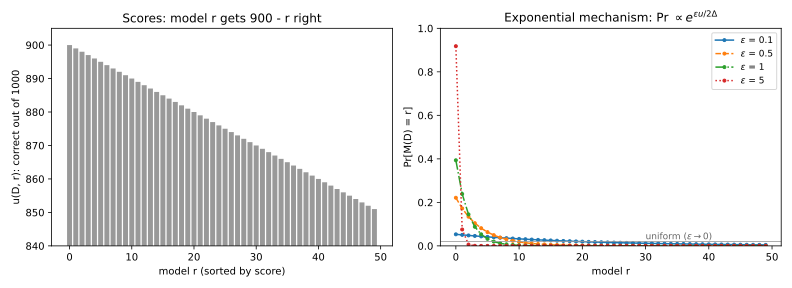
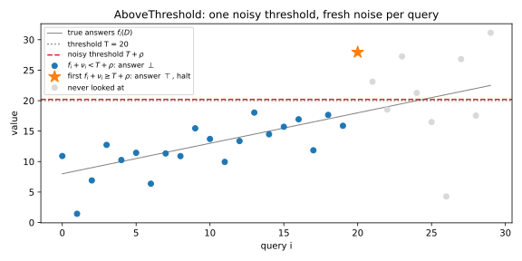
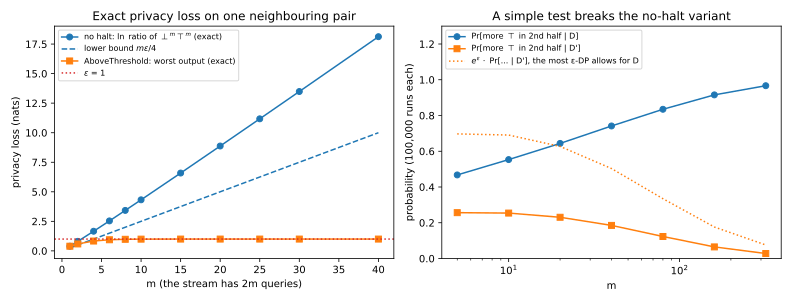

22 Selection: exponential mechanism, report-noisy-max, sparse vector
22.1 Why this matters
Many questions ask you to pick something rather than compute a number. Which of 50 hyperparameter settings scores best on the validation set? Which of a thousand monitored statistics first crosses an alarm level? The answer is a name from a list, and “model 7 plus noise” is not a model.
The Laplace and Gaussian mechanisms of differential privacy (DP) add noise to numbers. You could release a noisy score for every candidate, but that is \(k\) releases, and if one record can move all \(k\) scores, their costs add up and the noise must grow with \(k\), which is often in the thousands. Yet you only wanted the winner, and you never have to pay for the losers.
The one idea of this chapter is to release the position, not the values. Each mechanism adds noise to scores it never publishes and releases only which candidate won. A candidate wins when its own noise clears a bar set by the best of the others, and a maximum of numbers that each move by at most \(\Delta\) moves by at most \(\Delta\), however many numbers there are. So the number of candidates never enters the privacy cost. It enters only the accuracy, and only as \(\ln k\).
22.2 The exponential mechanism
Each of \(k\) candidates has a score \(u(D, r)\), how good candidate \(r\) is on dataset \(D\), and its sensitivity \(\Delta\) is the largest change in any one score between two neighbouring datasets, which differ in one person’s record. A deterministic argmax can jump to another candidate when one record moves a score across a tie, so a private selection must be random, tilted toward high scores. The question is how much tilt you can afford.
McSherry and Talwar (2007) answered by giving each candidate a weight that grows exponentially with its score, and picking it with probability equal to its share of the total weight. The exponential mechanism outputs candidate \(r\) with probability \[\Pr[M_E(D) = r] = \frac{\exp\big(\varepsilon\,u(D, r)/(2\Delta)\big)}{\sum_s\exp\big(\varepsilon\,u(D, s)/(2\Delta)\big)}, \tag{22.1}\] which is a softmax of the scores at temperature \(2\Delta/\varepsilon\). Why exponential, and why the 2? Changing one record moves each score by at most \(\Delta\), and an exponential turns that additive change into a multiplicative one: each weight changes by at most a factor \(e^{\varepsilon/2}\), whatever the score. The probability of \(r\) is its weight divided by the total, and both can move against you at once, one record raising \(r\)’s score while lowering its competitors’. Each costs at most \(e^{\varepsilon/2}\), so the ratio is at most \(e^\varepsilon\): the mechanism is \(\varepsilon\)-DP, and \(k\) appears nowhere in that argument.
The 2 can be dropped when the scores are monotone, meaning one record always pushes all scores the same way. Counts under add/remove neighbours are monotone; a histogram under replace neighbours is not, because moving a record from one bin to another raises one count and lowers another. With monotone scores, \(r\)’s weight and the total cannot both move against you, so weights \(e^{\varepsilon u/\Delta}\) are also \(\varepsilon\)-DP. Check this under your neighbouring relation before you drop the 2.
How much accuracy does the randomness cost? Call the gap the distance between the best score and the chosen one. A candidate whose score is at least \(c\) below the best has at most \(e^{-\varepsilon c/(2\Delta)}\) times the best candidate’s weight, so even if all \(k\) candidates were that bad, together they would be picked with probability at most \(k\,e^{-\varepsilon c/(2\Delta)}\). Setting that to \(e^{-t}\) gives, with probability at least \(1 - e^{-t}\), \[\text{gap} \le \frac{2\Delta}{\varepsilon}(\ln k + t), \tag{22.2}\] and an expected gap of at most \(\frac{2\Delta}{\varepsilon}(\ln k + 1)\). The \(\ln k\) comes from the factor \(k\) in front of an exponential: doubling the number of candidates adds only \(\frac{2\Delta}{\varepsilon}\ln 2\), and a lower bound shows that no \(\varepsilon\)-DP mechanism can avoid it.
Take 50 models scored on a private validation set of 1,000 examples: model \(r\) gets \(900 - r\) right, the score is the count of correct predictions, and \(\Delta = 1\). At \(\varepsilon = 1\) the mechanism picks the best model only 39% of the time, yet loses just 1.54 correct predictions on average, 0.15% accuracy: its mistakes are near-ties, which cost almost nothing (Table 22.1, Figure 22.1). Because the counts are monotone, the weights \(e^{\varepsilon u}\) cut the expected gap from 1.54 to 0.58.
| \(\varepsilon\) | \(\Pr[\text{best}]\) | \(\mathbb E[\text{gap}]\) | Bound \(2(\ln 50 + 1)/\varepsilon\) | \(\mathbb E[\text{gap}]\), monotone weights |
|---|---|---|---|---|
| 0.1 | 0.0531 | 15.03 | 98.24 | 9.17 |
| 1 | 0.3935 | 1.54 | 9.82 | 0.58 |
| 5 | 0.9179 | 0.09 | 1.96 | 0.01 |

The bound is loose here, 9.82 against 1.54, because it treats every candidate as if it sat just \(c\) below the best, while most of these are far below and nearly weightless. Use it to choose \(\varepsilon\), not to predict the result.
Two consequences follow from the proof. The candidate list must be fixed before you look at the data, because the argument compares the same list on both datasets; a candidate read off the data leaks through its mere presence. And never exponentiate scores in the thousands directly. Adding a constant to every score multiplies every weight by the same factor, which cancels, so subtract the largest score first, or use the Gumbel form of the next section.
22.3 Report-noisy-max and Gumbel noise
The other natural recipe adds noise to every score and reports the index of the largest, and only the index. Report-noisy-max outputs \(\arg\max_r\big(u(D, r) + Z_r\big)\) with independent \(Z_r \sim \mathrm{Lap}(b)\), and it is \(\varepsilon\)-DP with \(b = 2\Delta/\varepsilon\).
To see why the losers cost nothing, fix the noise of every other candidate. Their noisy scores are now fixed numbers, and candidate \(i\) wins exactly when its own noise clears a bar: the best of the others’ noisy scores minus \(i\)’s own score. One record moves the maximum by at most \(\Delta\), however many candidates it ranges over, and moves \(i\)’s score by at most \(\Delta\), so the bar moves by at most \(2\Delta\). Laplace noise of scale \(b\) pays for a shift \(s\) with a factor \(e^{s/b}\), so \(b = 2\Delta/\varepsilon\) makes the cost \(e^\varepsilon\). With monotone scores the maximum and \(i\)’s score move the same way, the bar moves by at most \(\Delta\), and \(b = \Delta/\varepsilon\) suffices: the same factor of 2, for the same reason, as in the exponential mechanism.
The proof also shows why you must release only the index. It holds the other noises fixed and averages over candidate \(i\)’s noise; publishing the winning noisy score publishes that very noise, and the guarantee is gone. If you need the winner’s score, spend extra budget on a fresh Laplace answer for that one query.
Accuracy follows from the same picture. If no noise exceeds \(b\ln(k/\beta)\), which happens with probability at least \(1 - \beta\), the noise cannot reorder candidates more than twice that apart, so the gap is at most \(2b\ln(k/\beta)\). On the 50 models at \(\varepsilon = 1\), Laplace report-noisy-max with \(b = 2\) picks the best model with probability 0.4241, against 0.3935 for the exponential mechanism, and has expected gap 1.40 against 1.54. Neither dominates in general.
They become the same mechanism with a different noise. If you add Gumbel noise of scale \(2\Delta/\varepsilon\) instead of Laplace noise, the argmax picks each candidate with exactly the probability of Equation 22.1. This Gumbel-max trick gives the stable sampler promised above: it works in score units, with no normalizer to overflow. On five candidates, a million Gumbel draws land within 0.0008 of the exponential mechanism’s exact probabilities, about the sampling error, while Laplace noise of the same scale, with a different tail, is off by a total variation distance of 0.0216. Taking the \(c\) largest Gumbel-noised scores gives the same distribution as running the exponential mechanism \(c\) times and removing each winner (Durfee & Rogers 2019), at a cost of \(c\varepsilon\) by basic composition.
22.4 The sparse vector technique
Now the candidates arrive one at a time and you want the first that is good enough, such as the first statistic to cross an alarm level. Answering each query with the Laplace mechanism would cost \(\varepsilon\) per query, mostly to learn “below”. The sparse vector technique (Dwork, Naor, Reingold, Rothblum & Vadhan 2009) compares every query with one noisy threshold and pays only for the one above it.
Its basic form, AboveThreshold (Dwork & Roth 2014, Algorithm 1), takes queries of sensitivity \(\Delta\), possibly chosen adaptively, a threshold \(T\), and budgets \(\varepsilon_1 + \varepsilon_2 = \varepsilon\). It draws the threshold noise \(\rho \sim \mathrm{Lap}(\Delta/\varepsilon_1)\) once. For each query it draws fresh noise \(\nu_i \sim \mathrm{Lap}(2\Delta/\varepsilon_2)\); if \(f_i(D) + \nu_i \ge T + \rho\) it outputs \(\top\) (“above”) and halts, and otherwise outputs \(\bot\) (“below”) and continues. It is \(\varepsilon\)-DP for any number of \(\bot\) answers.
The same bar argument explains why. The output “stop at query \(k\)” says two things: the noisy threshold sits above every earlier noisy answer, and at or below the \(k\)-th. The first is a statement about one number, the largest earlier noisy answer, which moves by at most \(\Delta\) however many queries came before; sliding the threshold noise by that much keeps all the \(\bot\) answers in place, at a cost of \(e^{\varepsilon_1}\). The single \(\top\) is paid for by sliding its own fresh noise by at most \(2\Delta\), at a cost of \(e^{\varepsilon_2}\). With monotone queries that slide is at most \(\Delta\), and \(\nu_i \sim \mathrm{Lap}(\Delta/\varepsilon_2)\) suffices (Lyu, Su & Li 2017).
The accuracy, unlike the privacy, depends on \(k\), because each of the \(k\) query noises could happen to be large. With the equal split and probability at least \(1 - \beta\), every \(\bot\) query has \(f_i(D) < T + \alpha\) and the \(\top\) query has \(f_k(D) \ge T - \alpha\), where \[\alpha = \frac{8\Delta\big(\ln k + \ln(2/\beta)\big)}{\varepsilon}. \tag{22.3}\] Only queries within \(\alpha\) of \(T\) can go either way. Say you monitor \(k = 1000\) counting queries (\(\Delta = 1\)) with \(T = 500\) at \(\varepsilon = 1\). With \(\beta = 0.05\), \(\alpha = 84.77\), so with probability at least 0.95 no query below 415.23 fires and no query above 584.77 is skipped. If every count is 400 except query 700, which is 600, the output is query 700; in 10,000 simulated runs it always was (Figure 22.2 shows a smaller run). Answering all 1,000 queries with the Laplace mechanism instead would add noise of scale 1,000 to counts of a few hundred.

AboveThreshold answers a yes/no question; to release the value of the query that fired, spend extra budget on a fresh Laplace answer. To find the first \(c\) queries above the threshold, restart it with fresh threshold noise after each \(\top\), at \(\varepsilon/c\) per run. Any split of \(\varepsilon\) is private; Lyu, Su & Li give a more accurate one than the equal split.
22.5 When the sparse vector technique goes wrong
The proof has three ingredients, and each protects one step: the fresh noise \(\nu_i\) pays for the \(\top\), the halt limits the run to the one \(\top\) that was paid for, and the noisy values stay secret because the proof averages over them. Lyu, Su & Li (2017) surveyed published variants, each a seemingly harmless optimization that weakens one ingredient; several are not DP at all (Table 22.2).
| Variant (as numbered by Lyu, Su & Li) | What it changes | Privacy shown by Lyu, Su & Li |
|---|---|---|
| Algorithm 1 (theirs); Algorithm 2 (Dwork & Roth) | Correct, with \(c\) answers above | \(\varepsilon\) |
| Algorithm 3 (Roth’s 2011 lecture notes) | Outputs the noisy value \(f_i + \nu_i\) for each \(\top\) | \(\infty\) |
| Algorithm 4 (Lee & Clifton 2014) | Query noise does not grow with \(c\) | \(\frac{1 + 6c}{4}\varepsilon\) |
| Algorithm 5 (Stoddard et al. 2014) | No noise on the queries | \(\infty\) |
| Algorithm 6 (Chen et al. 2015) | Never halts | \(\infty\) |
The no-halt variant is the instructive one, because it uses exactly AboveThreshold’s noise and only skips the halt. Each further \(\top\) would need another slide of its own noise, another factor \(e^{\varepsilon_2}\), and nothing pays for it. Take neighbours where the first \(m\) queries are 0 and the last \(m\) are 1 on \(D\), and the reverse on \(D'\). The output “\(m\) below, then \(m\) above” is a little more likely under \(D\) at every one of its \(2m\) answers, and without a halt these small factors multiply: the privacy loss is at least \(m\varepsilon/4\), which grows without bound. At \(\varepsilon = 1\), AboveThreshold’s largest loss levels off at exactly \(\varepsilon\), so its proof is tight, while the no-halt variant’s grows linearly in \(m\) (Figure 22.3, left).
A reviewer who checks only noise scales will miss this bug. An empirical audit catches it. If a mechanism is \(\varepsilon\)-DP, any event is at most \(e^\varepsilon\) times as likely under \(D\) as under \(D'\), so the log-ratio of a test’s firing rates is a lower bound on the true \(\varepsilon\). The test “more \(\top\) answers in the second half than in the first” gives a log-ratio of 1.40 at \(m = 40\), which already proves the no-halt variant is not 1-DP (Figure 22.3, right). When you review an implementation, check the ingredients directly: fresh noise for every query (reusing one draw is Algorithm 5’s bug), one threshold noise per run, a halt after the allowed number of \(\top\) answers, and no published noisy values.

22.6 Code
Each mechanism fits in a few lines. Note where AboveThreshold draws its two noises:
import random
from math import exp, log
from typing import Sequence
def exponential_mechanism_probs(scores: Sequence[float], eps: float, sensitivity: float) -> list[float]:
"""Selection probabilities, proportional to exp(eps * u / (2 * sensitivity)), without overflow."""
top = max(scores)
weights = [exp(eps * (u - top) / (2 * sensitivity)) for u in scores]
total = sum(weights)
return [w / total for w in weights]
def gumbel_select(scores: Sequence[float], eps: float, sensitivity: float, rng: random.Random) -> int:
"""One draw of the exponential mechanism: add Gumbel noise of scale 2 * sensitivity / eps, take the argmax."""
beta = 2 * sensitivity / eps
noisy = [u - beta * log(-log(1 - rng.random())) for u in scores]
return max(range(len(scores)), key=noisy.__getitem__)
def laplace(scale: float, rng: random.Random) -> float:
return rng.expovariate(1 / scale) - rng.expovariate(1 / scale)
def above_threshold(
answers: Sequence[float], threshold: float, eps: float, sensitivity: float, rng: random.Random
) -> int | None:
"""Index of the first answer whose noisy value reaches the noisy threshold; equal budget split."""
noisy_threshold = threshold + laplace(2 * sensitivity / eps, rng) # drawn once per run
for i, answer in enumerate(answers):
if answer + laplace(4 * sensitivity / eps, rng) >= noisy_threshold: # fresh noise every query
return i # halt, and release only the index
return None
def svt_margin(k: int, eps: float, sensitivity: float, beta: float) -> float:
return 8 * sensitivity * (log(k) + log(2 / beta)) / eps
print([round(p, 4) for p in exponential_mechanism_probs([3, 2, 1, 0], 1.0, 1.0)]) # [0.4551, 0.276, 0.1674, 0.1015]
print(f"{svt_margin(1000, 1.0, 1.0, 0.05):.2f}") # 84.77
counts = [600.0 if i == 699 else 400.0 for i in range(1000)] # query 700 is the only high one
print(above_threshold(counts, 500.0, 1.0, 1.0, random.Random(0))) # 699The first line is a vote with counts \((3, 2, 1, 0)\) at \(\varepsilon = 1\); the last finds query 700 of the alarm stream. Floating-point samplers are fine for checking a calculation but not for production (Discrete and floating-point-safe mechanisms): use a vetted DP library. The full edition’s script, selection.py, computes every number in this chapter and checks each mechanism by exact integration and simulation:
uv run python code/part03-dp-foundations/selection.py22.7 Cheat sheet
| Mechanism | Output | Privacy | Accuracy |
|---|---|---|---|
| Exponential mechanism | \(r\) with probability \(\propto e^{\varepsilon u(D, r)/(2\Delta)}\) | \(\varepsilon\); \(e^{\varepsilon u/\Delta}\) for monotone scores | Gap \(\le \frac{2\Delta}{\varepsilon}(\ln k + t)\) w.p. \(1 - e^{-t}\) |
| Report-noisy-max, Laplace | \(\arg\max_r(u + \mathrm{Lap}(2\Delta/\varepsilon))\), index only | \(\varepsilon\); \(\mathrm{Lap}(\Delta/\varepsilon)\) for monotone scores | Gap \(\le 2b\ln(k/\beta)\) w.p. \(1 - \beta\) |
| Report-noisy-max, Gumbel | \(\arg\max_r(u + \mathrm{Gumbel}(2\Delta/\varepsilon))\) | Identical to the exponential mechanism | Same |
| AboveThreshold | First \(f_i + \mathrm{Lap}(2\Delta/\varepsilon_2) \ge T + \mathrm{Lap}(\Delta/\varepsilon_1)\), then halt | \(\varepsilon_1 + \varepsilon_2\), any number of \(\bot\) | \(\alpha = 8\Delta(\ln k + \ln\frac2\beta)/\varepsilon\), equal split |
| \(c\) answers above | AboveThreshold restarted \(c\) times at \(\varepsilon/c\) | \(\varepsilon\) by basic composition | \(\alpha\) with \(\varepsilon/c\) in place of \(\varepsilon\) |
22.8 Further reading
- Dwork & Roth, The Algorithmic Foundations of Differential Privacy (2014), §3.3, §3.4 and §3.6: report-noisy-max, the exponential mechanism and AboveThreshold, with proofs.
- Lyu, Su & Li, “Understanding the Sparse Vector Technique for Differential Privacy” (Proceedings of the VLDB Endowment, 2017): the general algorithm, the budget split and the survey of broken variants. The best single source on the technique.
- Durfee & Rogers, “Practical Differentially Private Top-k Selection with Pay-what-you-get Composition” (NeurIPS 2019): one-shot Gumbel top-\(c\) selection.
- Near & Abuah, Programming Differential Privacy, the chapters on the exponential mechanism and the sparse vector technique: short implementations.
Derivations. Every result in this chapter is derived step by step in the full edition’s chapter.